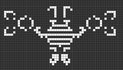
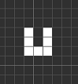
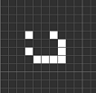

Идеи, описание на алгоритъма, имплементация
След първоначалното запознаване с условията на втората задача от конкурса на PC Magazine и Telerik се насочихме към изучаване на различни базови форми във вселената на Game Of Life. Идеята беше да се намерят сравнително компактни, изискващи малък брой начални клетки форми, които нарастват максимално за определен брой генерации. След това щяхме да комбинираме множество базисни форми, поставяайки ги на игралното поле така, че да не се засичат една друга и в същото време да го изпълват възможно най-добре. Появиха се две идеи за записване на началните конфигурации – като масиви от стрингове или като масиви от интиджър числа (int или long, в зависимост от размерите на началната форма). Спряхме се на варианта със стринговете, защото беше по-лесно да се визуализират началните форми от човек. Използвайки класа Pattern описахме трите форми, върху които базирахме цялото си решение:
SpaceFiller – наистина готина форма, растяща неограничено докато не срещне стена или друга форма. Изисква 200 клетки, но като се има предвид ограничението за броя наличи живи клетки – 3 < V < N * N – 5 не смятахме, че ще има недостиг на клетки за поставяне. Проблемът с нея е, че се развива като ромб, растяща в 4-те посоки. Така трудно може да оценим количеството храна, което ще погълне. Друго затруднение е в ситуацията когато имаме игрално поле със страна N по-малка от броя генерации T. Тогава дори и сложен и по средата на полето SpaceFiller-ът достига четирите края и доста бързо се самоизяжда, понижавайки доста крайният брой живи клетки.
uShape – 7 клети, подредени под формата на буквата U се развиват доста бързо, заемат сравнително компактно място и лесно се комбинират с друго подобни форми в група. След около 150 генерации се достига до стабилно състояние от 55 живи клетки, които се запазват непроменени в следващите времеви периоди. Сравнително лесно може да се придобие представа за количеството изядена храна от тази форма, защото тя се развива заемайки почти правоъгълна форма. Чрез използването на интегрална матрица изключително бързо може да се сметне наличното количество храна и да се оцени на коя възможна позиция е най-ефективно да се постави поредната uShape. Отново, поради очакваното изобилие от живи клетки в началото на играта не смятам, че това би било от голяма полза.
Glider – 9 живи клетки, движещи се в една от четирите посоки, изяждащи всичката храна по пътя си. Пусната сама тази конфигурация отскача от края на игралното поле, превръщайки се в диагонален Glider и се установява на някой от съседните краища на полето като стабилна форма от 4 живи клетки под формата на квадрат. Това поведение беше нежелано, защото най-вероятно диагоналния Glider щеше да си взаимодейства с други елементи от полето и да наруши тяхното развитие. Не открихме начин за правилното изчисляване на тези евентуални колизии. Решението на проблема се изразява в пускането на Glider-ите по двойки, като по този начин те се самоунищожават непосредствено след сблъсъка си със стената. Имайки началната позиция на Glider-а и знаейки колко генерация той ще съществува лесно може да се оцени броят изядени клетки с храна по гореописания метод с интегралната матрица.
Квадрат – 4 живи клетки, подредени под формата на квадрат осигуряват стабилна, непроменяща се във времето форма. Идея за употребата на подобна конфигурация се появи в последния етап от разработката на алгоритъм. Целта е да се запазят възможно най-много живи клетки на игралното поле в ситуация, когато имаме прекомерно много начални клетки и броя генерации чувствително превишава дължината на страната на полето. В подобна ситуация SpceFiller-а не дава добри резултати, защото доста бързо се самоизяжда.
Освен гореописаните 4 базови форми се използват и още две производни на SpaceFiller и uShape – т.нар. им негативни форми, или форми, които осигуряват тяхното безпроблемно съществуване и развитие, когато се поставят в плътна група от живи клетки. Целта е да се реши проблема с прекомерния брой живи клетки в началото на играта.
Разполагайки с тези инструменти плюс възможността да поставяме ненужните живи клетки в 4-те ъгъла на полето под формата на равнобедрени триъгълници ни дава възможност да конструираме готови решения на проблема.
Поради изключително разнообразните възможни конфигурации от входни данни срещнахме значителни затруднения в избора на комбинация от базови форми и прилагането им върху полето. Общо взето механизмът е следния:
1. Брой живи клетки V – при наличие на поне 7 клетки се ползват uShape, при наличие на поне 200 – SpaceFiller + uShape в четирите зони, които остават незасегнати от SpaceFiller-a. Първо се поставя централнаа форма, после всички останали клетки се разпределят в четирите края по д формата на триъгълници, след това се разполагат негативни форми на uShape, като се следи броя използвани живи клетки, като накрая се премахва същия брой клетки, започвайки от върховете на триъгълниците. Има ситуации, когато този алгоритъм ще доведе до нарушаването формата на някои от uShape, но отново не успяхме да намерим правилно решение на проблема. При наличие на повече от N *N – 3500 живи клетки (3500 е емпирично намерено вълшебно число) се появява нуждата от използване на негативната форма на SpaceFiller-а. Тогава се запълва цялата игрална площ с живи клетки и в последствие поставяйки едан по една негативните форми се следи за това колко празни полета са останали. Следва поставяне на празни клетки в четирете края на игралнато поле до достигане на желаната бройка. Ако нямаме достатъчно на брой свободни полета за поставянето на SpaceFiller в средата се ползват само uShape – аналогично на ситуацията с малък брой живи клетки в началото. Тук се появи и проблемът с наличната храна – при последователното слагане и премахване на живи клетки в крайна сметка можеше да се окаже, че в дадена клетка е трябвало да има храна, а ние я показваме като празна. Проблемът бе решен, като началната входна матрица с храната се пази отделно и чак при отпечатването на края се комбинира с генерираното игрално поле.
2. За всеки от горните варианти се взима предвид съотношението на страната на игралното поле N и броя генерации T. Ако T е два и повече пъти по-малко от N има възможност за поставянето на няколко SpaceFiller-a така, че да не си пречат взаимно.
Ако ситуацията е обратната – T > N имаме два варианта – в зависимост от количеството живи клетки V трябва или да се стремим към тяхното увеличение или към запазването им, ако са прекалено много при положение, до 50% от играланта матрица трябва да бъде запълнена с живи клетки е по-изгодно да се използва неподвижната и непроменящата се форма на квадрата. Така най-ефективно ще се използва свободното пространство. При повече от 50% запълване засега нямаме добро решение на проблема.
По-малко от 15 часа преди крайния срок за предаване на готовите решения все още изпитваме значителни трудности в правилното и ефективно описване на горните идеи чрез множество условни оператори. Съществува реална опасност от създаването на неефективни решения.
Допълнение:
Неосъществени идеи и хрумвания, свързани със задачата
1. Възможно е за всяка от гореизброените форми да се изчисли как би изглеждала след T на брой генерации - през кои клетки е минала и какви са били най-големите й размери. Тази информация да се запише в външни файлове разпределени по директории за всяка генерация. Тук би било полезно побитовото представяне на всеки ред от всяка форма по време на всяка поредна генерация. При пускане на алгоритъма търсената генерация вече е ясна и се работи с конкретните файлове за нея. Проблемите тук са как точно да се подреждат възможните начални форми и как бързо да се пресмята колко точно храна биха изконсумирали. Ползите биха се проявили при стойности на T до около 150, където uShape вече става стабилен и размерите му остават константни.
2. Използването на генетични алгоритми. Подредбата на игралното поле може да се изиграва пълно до зададеното T и да се вижда реалният резултат. Различните конфигурации се трупат в един лист, който в последните 15-20 милисекунди се подрежда и се използва най-ефективната. Проблемите тук са във представянето на хромозомата на решението и ефективното й комбиниране и мутиране в последствие. Ползването на всички клетки на изходната матрица е един вариант, но не виждаме ефективен начин за разместване на клетките и по-важно на формите и запазването на крайния брой живи клетки. Друга възможност е описание по някакъв начин на какви координати каква форма е поставена и в последствие преместването им в допустими граници. Отново, комбинирането на две хромозоми остава проблем. Евентуалните ползи биха се усетили при малките игрални полета и ниски стойностти на T, където за 3 секунди могат да се проиграят сравнително повече варианти. Когато T и N нарастват нужното време за пълно изиграване на полето расте в геометрична прогресия и в крайна сметка генетичните алгоритми се оказват неефективни, или казано с други думи не бе намерена подходяща имплементация на генетичен алгоритъм.
Допълнение 2
Интегрална матрица
Идеята е да се създаде и предварително да се попълни матрица, във всяка клетка на която е записан броят на всички клетки, пълни с храна в правоъгълника с горен ляв ъгъл с координати 0,0 и долен десен ъгъл самата клетка. Веднъж изчислени тези сборове позволяват само чрез 3 аритметични операции да се изчисли количеството храна във всеки един правоъгълник, част от първоначалната матрица. Подробно описание на алгоритъма може да се намери на http://en.wikipedia.org/wiki/Summed_area_table.
След известно проучване бе намерено и описание на подобен алгоритъм, позволяващ изчисляване на количеството храна в триъгълни региони. Посочения алгоритъм е описан като част от научна публикация на следния адрес http://www.di.ubi.pt/~hugomcp/doc/faceDetectionICSP.pdf. За съжаление не успяхме да го приложим на практика.